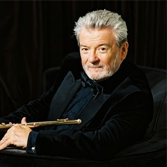

A módszerről
Az Alexander-technika egy egyszerű, gyakorlati módszer, melynek elsajátításával képessé válunk észrevenni és elengedni fölösleges izomfeszültségeinket, és visszanyerhetjük mozgásunk könnyedségét.
Egy egészséges kisgyermek hozzávetőlegesen 2-3 éves koráig minden mozdulatához csak annyi izmot használ, amennyi az adott tevékenységhez feltétlenül szükséges. Őket nézve megdöbbentően szép tartású, fájdalomra nem panaszkodó embereket látunk. Ez a tökéletesen működő rendszer azonban hamar felborul a stressz és kedvezőtlen külső hatások, mint például a nehéz iskolatáska, nem optimális szék miatt. Ezek következtében egyre többször alakul ki szükségtelen izomfeszültség a szervezetben.
A túl tónusos izomzatot az ismétlődések hatására az idegrendszer egyre inkább optimálisnak értékeli. Ennek következtében egy átlagos felnőtt izomzata – anélkül, hogy ő maga észlelné - ülés, állás, vagy akár fekvés közben is feszültségben lehet. Legtöbbször már csak az ebből eredő fájdalom érzékelhető, rosszabb esetekben pedig komoly mozgásszervi problémák alakulhatnak ki.
A módszer megalkotójáról
Az Alexander-technika kifejlesztője Frederick Matthias Alexander (1869-1955) ausztrál színész volt. Húszas éveitől szenvedélyes Shakespeare-színészként tevékenykedett, azonban az orvosok számára érthetetlen okokból szavalás közben újra és újra berekedt. Mivel szervi elváltozást nem diagnosztizáltak nála, felismerte, hogy a hétköznapi beszédhez képest a színpadon valamit máshogy csinál, s ez okozza problémáját.
Hosszú éveken keresztül figyelte magát, és testében olyan fölösleges izomfeszültségeket észlelt, melyek elengedésével hangképzőszerveinek rendellenes működése megszűnt. Azt tapasztalta, hogy ezen feszültségek elengedése következtében mozgása koordináltabb, figyelme pedig éberebb lett. Megfigyelései során rengeteg komplex összefüggésre jött rá a test, idegrendszer és lélek működésével kapcsolatban. Ezen törvényszerűségeket lejegyezve 1890 körül kifejlesztette módszerét, az Alexander-technikát.
Korának orvosai, politikusai, zenészei, színészei és még sokan mások keresték fel problémáikkal. Tapasztalatait négy könyvben foglalta össze, és megalapította az első Alexander-technika tanárképző iskolát. F. M. Alexander a testet, lelket, valamint a tudatot olyan egységként értelmezte, mely nem választható szét egymástól, s melyben az egyén képes a figyelmével izmai állapotát befolyásolni. Ennek értelmében az Alexander-technika egy pszicho-fizikai módszer, melyben a kor orvosai olyan lehetőséget láttak, ami új megvilágításba helyezte az orvostudomány addigi felfedezéseit. 1931-től élete végéig Londonban és az Amerikai Egyesült Államokban élt és oktatott.
A nemzetközi egyesületek oktatói tevékenysége mellett manapság a technika számos külföldi egyetemen már a tanterv része, itthon az elmúlt években a budapesti Liszt Ferenc Zeneművészeti Egyetemen, a Magyar Táncművészeti Főiskolán, a Semmelweis Egyetemen és a Károli Gáspár Református Egyetemen is beemelték a képzésbe.
Kinek ajánlom
Az Alexander-technika mindenkinek ajánlott, aki szeretne könnyeden, fájdalommentesen mozogni, saját működését megérteni. Hasznát veszik:
- zenészek
- táncosok
- színészek
- sportolók
- masszőrök
- ülő munkát végzők
- kismamák
- akiknek fontos a jó kiállás
- akik mozgásszervi fájdalmakkal, fejfájással, gerincsérvvel küzdenek
Híres növendékek
Hírességek, akik a módszert tanulták és alkalmazták (a teljesség igénye nélkül):
-
Zenészek:
-
Yehudi Menuhin

-
Artur Rubinstein

-
James Galway
 -
Paul McCartney

-
Sting

-
Madonna

-
- Színészek: Hugh Jackman, Pierce Brosnan, Paul Newman, John Cleese, Patrick Stewart, Robin Williams, Jamie Lee Curtis, Lupita Nyong’o, Paul Gross, Suzanna Hamilton
- Táncosok: Wayne Byars, Trisha Brown, Phyllis G. Richmond, Karczag Éva, Sumi Komo, Joseph Carman, Diana Sichel, Anna Bluethenthal, Elyse Shafarman, Rachel Bernsen
- Sportolók: Sally Swift, Sebastian Coe, Paul Collins, John McEnroe, Howard Payne, Mary Hanna, Linford Christie, Matthew Pinsent, Percy Cerutty, Daley Thompson
- Közszereplők: Diana hercegnő, Katalin hercegnő (Kate Middleton), Kepes András, Jacqueline Kennedy, Sir Stafford Cripps